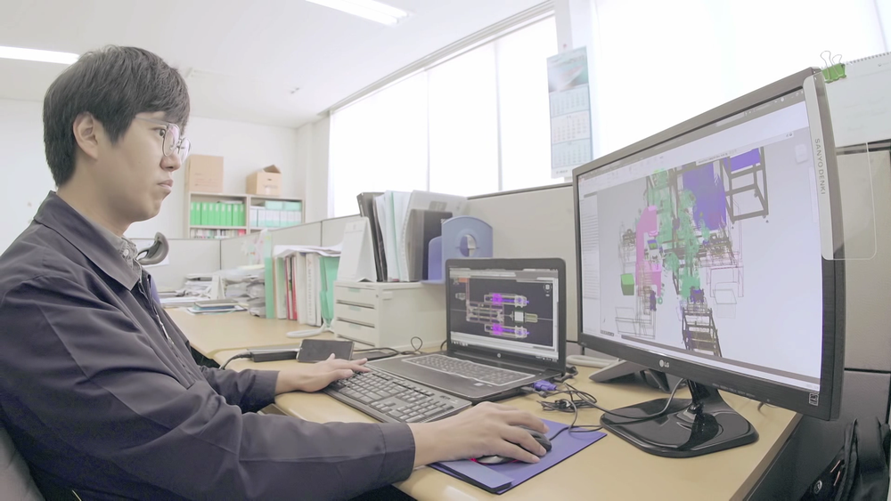

인재채용
한국도키멕주식회사에서
새로운 인재를 찾고 있습니다.
일본 최대 유압회사인 TOKIMEC INC.(現 TOKYO KEIKI)이 본사인 한국도키멕주식회사는 자동화기기 전문기업으로 성장하고 있으며 국내 유공압기기의 선두 기업입니다.

채용절차
*면접전형 이후 실무진에서 별도의 실무면접 요청이 있을 수도 있습니다.
복지제도
자녀 학자금 지원
임직원 자녀의 보육시설, 고등학교, 대학교 학자금을 지원합니다.
경조사 지원
경조사 발생 시 유급휴가 및 경조금을 지원합니다.
외국어 교육비 지원
임직원의 어학능력 향상을 위해 교육비를 지원합니다.
어학 및 자격수당 지급
회사 지정 자격증 취득 시 별도의 수당을 지급합니다.
사내 동호회 지원
사내 동호회 정기모임을 지원합니다.
우수사원 포상
우수사원 및 장기근속 임직원을 포상합니다.
휴양 시설 운영
리조트 이용 시 할인 혜택을 제공합니다.
건강검진 지원
임직원의 건강한 생활을 위한 검진을 지원합니다.